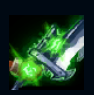
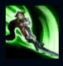
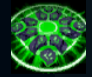
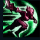
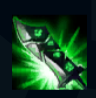

Riven
| Riven The Exile | |
|---|---|
| Release date | 14.09.2011 |
| Class | Skirmisher |
| Positions | Top |
| Resource | Manaless |
| Range type | Melee |
| Adaptive type | Physical |
| Base statistics | |||
| Health | 560 – 2022 | Resource | N/A |
| Health regen. | 7.5 –15.55 |
Resource regen. | N/A |
| Armor | 33 – 99.75 | Attack damage | 64 – 115 |
| Magic resist. | 32 – 53.25 | Crit. damage | 175% |
| Move. speed | 340 | Attack range | 125 |
O fostă conducătoare a unei cete noxiene de război, Riven a fost exilată într-un tărâm pe care a încercat odinioară să-l cucerească. Datorită credinței sale în Noxus și eficienței sale brutale, a crescut repede în rang, primind ca recompensă o sabie runică legendară și propria ceată de război. Cu toate astea, pe frontul din Ionia, încrederea pe care Riven o avea în patria sa a fost pusă la încercare și, în cele din urmă, spulberată. A rupt orice legătură pe care o avea cu imperiul, iar acum își caută locul într-o lume destrămată, chiar dacă multe zvonuri spun că Noxusul ar fi fost refăcut altfel decât era odată... |  |
SABIE RUNICĂ Abilitățile lui Riven îi încarcă sabia, iar atacurile de bază folosesc cumulurile pentru a provoca daune suplimentare. |
||
|---|---|---|---|---|
 |
ARIPI SFÂȘIATE Următorul atac al lui Rengar înjunghie brutal ținta, provocându-i daune bonus. Efect ''Ferocitate'': provoacă daune suplimentare și oferă viteză de atac. | |||
 |
DEZLĂNȚUIREA KI Riven provoacă daune și amețește inamicii din apropiere printr-o ''Dezlănțuire Ki'' |
|||
|  |
VITEJIE Riven înaintează pe o distanță scurtă și blochează daunele de la agresori. |
|||
 |
SABIA RENEGATEI Riven își încarcă sabia cu energie și câștigă daune din atac și rază de acțiune. Cât timp abilitatea este activă, ea poate folosi o singură dată ''Lovitura vântului'', un atac la distanță foarte puternic. |